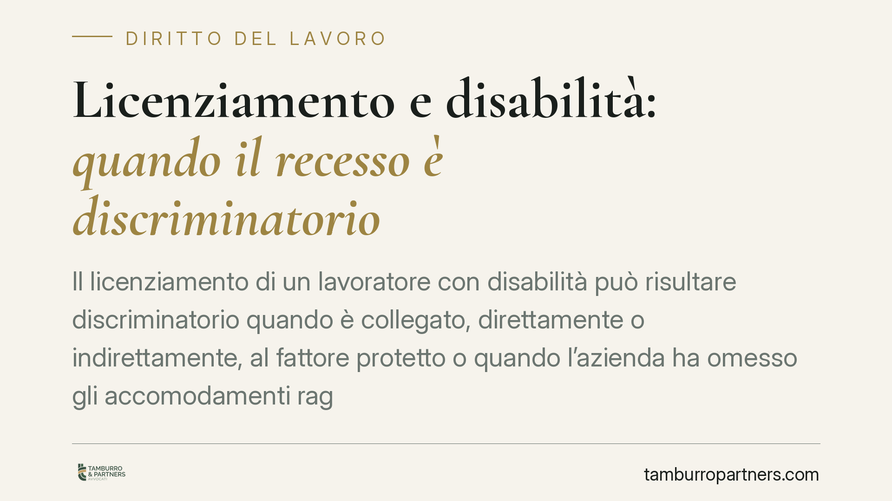

Licenziamento e disabilità: quando il recesso è discriminatorio
Il licenziamento di un lavoratore con disabilità può risultare discriminatorio quando è collegato, direttamente o indirettamente, al fattore protetto o quando l'azienda ha omesso gli accomodamenti ragionevoli. La buona fede soggettiva del datore non sempre esclude la responsabilità, che si misura sulla diligenza. Vediamo il quadro normativo e cosa implica, in concreto, per chi gestisce il personale.

Il principio: discriminazione e nesso con il fattore protetto
La disciplina della discriminazione per disabilità non ruota attorno a un generico "dovere di indagare lo stato di salute" del dipendente. Il baricentro è un altro: la verifica di un nesso, diretto o indiretto, tra il recesso e il fattore protetto, e il rispetto dell'obbligo di adottare accomodamenti ragionevoli.
In una discriminazione diretta il trattamento sfavorevole è legato in modo immediato alla disabilità. In quella indiretta, una scelta apparentemente neutra (ad esempio un criterio di produttività) penalizza in misura particolare il lavoratore disabile senza giustificazione oggettiva. In entrambi i casi la condotta può essere illegittima a prescindere dall'intento di nuocere.
Qui emerge la distinzione rilevante: la buona fede soggettiva – l'aver agito senza consapevolezza della disabilità – non coincide con l'assenza di responsabilità. Quest'ultima si valuta sul piano della diligenza dovuta nell'organizzazione aziendale (art. 1176 c.c.) e della correttezza nell'esecuzione del rapporto (art. 1375 c.c.).
Inquadramento normativo
Il riferimento centrale è il D.Lgs. 216/2003, che attua la direttiva 2000/78/CE in materia di parità di trattamento in ambito lavorativo. L'art. 3, comma 3-bis, impone al datore di adottare accomodamenti ragionevoli per garantire alle persone con disabilità la piena parità, nei limiti di un onere non sproporzionato.
Accanto a questo, la L. 68/1999 regola il collocamento mirato e gli obblighi delle aziende verso i lavoratori disabili. Sul piano del recesso vanno considerati l'art. 2110 c.c. (comporto per malattia) e l'art. 2118 c.c. (recesso), oltre alla tutela antidiscriminatoria che, se accertata, comporta la nullità del licenziamento.
La giurisprudenza della Corte di giustizia e della Corte di Cassazione ha chiarito che l'obbligo di accomodamenti ragionevoli è parte integrante della tutela: l'impossibilità del datore di provare di aver valutato soluzioni organizzative alternative al licenziamento può pesare in giudizio.
Il ruolo del medico competente: cosa può e non può sapere il datore
Un punto spesso frainteso riguarda la sorveglianza sanitaria. Il medico competente, ai sensi del D.Lgs. 81/2008, non comunica al datore le patologie o le diagnosi del lavoratore. Trasmette esclusivamente il giudizio di idoneità alla mansione (idoneo, idoneo con limitazioni o prescrizioni, inidoneo).
Il datore, quindi, non acquisisce né deve acquisire i dati sanitari del dipendente: la disciplina sulla protezione dei dati (GDPR) e la stessa normativa sulla sicurezza lo vietano. Ciò rende infondata l'idea che l'azienda debba "accertare la disabilità" indagando lo stato di salute. L'informazione rilevante ai fini organizzativi è il giudizio di idoneità e le eventuali limitazioni, non la natura della condizione clinica.
Questo non deresponsabilizza l'azienda. Di fronte a un giudizio di idoneità con limitazioni, o a elementi oggettivi noti, scatta l'onere di valutare adattamenti ragionevoli prima di considerare il recesso.
Implicazioni pratiche
Per chi gestisce il personale il perimetro è chiaro. Non si tratta di investigare la salute dei dipendenti, ma di costruire processi decisionali che reggano a un controllo giudiziale.
In un contenzioso antidiscriminatorio opera un regime probatorio agevolato per il lavoratore: se emergono elementi che fanno presumere la discriminazione, spetta al datore dimostrare l'assenza di un collegamento con il fattore protetto e, dove pertinente, di aver valutato gli accomodamenti possibili. La documentazione delle scelte organizzative diventa quindi decisiva.
Cosa fare in concreto
- Documentare il percorso decisionale che porta a un recesso, con le ragioni oggettive e, ove rilevi un giudizio di idoneità con limitazioni, la valutazione delle alternative organizzative esaminate.
- Gestire i giudizi di idoneità del medico competente come input organizzativo, senza richiedere o trattare dati sulla diagnosi.
- Formare le funzioni HR sulla differenza tra idoneità alla mansione e condizione di salute, e sugli obblighi in materia di accomodamenti ragionevoli.
- Verificare la congruità delle procedure con L. 68/1999 e D.Lgs. 216/2003 prima di assumere decisioni sul rapporto con lavoratori potenzialmente tutelati.
- Conservare traccia delle soluzioni alternative considerate (ricollocazione, adattamento di mansioni o orari) e delle ragioni di un'eventuale non praticabilità.
Disclaimer
Contributo informativo a cura di Tamburro & Partners - Avv. Giuseppe Tamburro. Non costituisce parere legale.
Ogni storia di lavoro ha i suoi tempi.
Se gestisci HR e vuoi un confronto su contenzioso, ispezioni o licenziamenti, scrivi allo studio. Ti rispondiamo entro un giorno lavorativo.